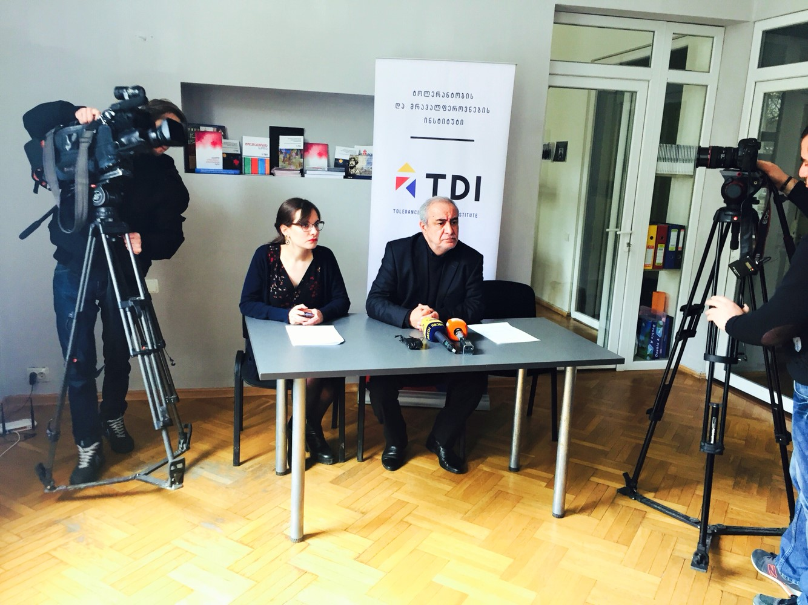

2016 წლის 29 მარტს, „ტოლერანტობის და მრავალფეროვნების ინსტიტუტმა (TDI)“ გამართა ბრიფინგი, სადაც „სრულიად საქართველოს მუსლიმთა სამმართველოს“ ყოფილმა შეიხმა, ვაგიფ აქპეროვმა ორგანიზაციის წარმომადგენლებთან ერთად, ისაუბრა მის წინააღმდეგ ჩადენილი სავარაუდო სისხლის სამართლის დანაშაულებისა და ძირითადი უფლებებისა და თავისუფლებების დარღვევის ფაქტების შესახებ.
ვაგიფ აქპეროვის ინტერესებს იცავს „ტოლერანტობის და მრავალფეროვნების ინსტიტუტი (TDI)“.
2016 წლის 28 მარტს, ყოფილმა შეიხმა სახალხო დამცველს მიმართა განცხადებით, რომელშიც იგი აღნიშნული ფაქტების შესწავლასა და სახელმწიფოსგან შესაბამის რეაგირებას ითხოვს. ოფიციალურ მიმართვამდე, სახალხო დამცველმა საკუთარი ინციატივითაც გადაწყვიტა აქპეროვის საქმის შესწავლა.

ფაქტობრივი გარემოებები
ხელისუფლების ცვლილება და ძალოვან უწყებათა ზეწოლა შეიხ ვაგიფ აქპეროვზე, მის მიერ თანამდებობის დატოვების მიზნით
ვაგიფ აქპეროვი მრავალი წელია აქტიურ საზოგადოებრივ ცხოვრებას ეწევა. იგი 1996 წლიდან არის სასულიერო პირი; დღემდე აქტიურად მონაწილეობს ინტერრელიგიური დიალოგის სხვადასხვა ფორმტაში და ღიად ეწინააღმდეგება რელიგიის სახელით ყოველგვარ ძალადობას. 2011 წლიდან ვაგიფ აქპეროვი საკუთარ მოვალეობას შეიხის პოზიციაზე კეთილსინდისიერად ასრულებდა (მის მიმართ არასოდეს გამოყენებულა დისციპლინარული ან/და პასუხისმგებლობის სხვა ფორმები). თუმცა, აქპეროვის განმარტებით, 2012 წლიდან, ხელისუფლების ცვლილების შემდეგ, მასზე დაიწყო პოლიტიკური ზეწოლა და სახელმწიფოს მხრიდან რელიგიური ორგანიზაციის ავტონომიაში უხეში ჩარევის ფაქტები გამოვლინდა. აქპეროვის თქმით, მისგან ითხოვდნენ, არ მიეღო მონაწილეობა საჯარო შეხვედრებში, კონფერენციებში და არ ჰქონოდა ურთიერთობა სხვა რელიგიურ გაერთიანებებთან.
შეიხის დაბარება “მოდულის შენობაში“
2013 წლის ზაფხულიდან, შეიხზე ზეწოლამ კიდევ უფრო აშკარა ხასიათი მიიღო. ვაგიფ აქპეროვის თქმით, 2013 წლის 27 დეკემბერს, დაახლოებით, საღამოს 6-7 საათზე მას დაურეკა უცნობმა პირმა, რომელმაც უთხრა რომ წარმოადგენდა საქართველოს შინაგან საქმეთა სამინისტროს და მოითხოვა მისი მისვლა შეხვედრაზე იმავე დღის საღამოს 9 საათზე, თბილისში, ვაჟა-ფშაველას გამზირზე მდებარე „მოდულის“ შენობაში.
საუბრის დროს, აქპეროვის თქმით, მას კატეგორიულად აუკრძალეს პრესასთან ურთიერთობა და მოსთხოვეს, რომ შეეწყვიტა მეჩეთში სიარულიც. შეიხის კითხვაზე, თუ რას მოიმოქმედებდნენ მითითებების შეუსრულებლობის შემთხვევაში, აქპეროვის თქმით, შსს-ს წარმოამადგენლები პირადი ცხოვრების შესახებ ინფორმაციის გავრცელებითა და საზოგადოებაში ავტორიტეტის შელახვით დაემუქრნენ. ამასთანავე, საუბარში ხშირად უხსენებდნენ შვილებს და რამდენჯერმე მიანიშნეს, რომ შვილების ინტერესებისთვისაც აჯობებდა, დაეწერა განცხადება და დაეტოვებინა თანამდებობა, რაც აქპეროვის მიერ შეფარულ მუქარად იქნა აღქმული და მას გაუჩნდა შიში, რომ წინააღმდეგობის გაწევის შემთხვევაში, მისი ოჯახის წევრებს საფრთხე შეექმნებოდათ.
ვაგიფ აქპეროვი, ზეწოლიდან და იმ გარემოდან გამომდინარე, რომელშიც ის იმყოფებოდა (მოდულის შენობაში, მხოლოდ ძალოვანი უწყების წარმომადგენლების გარემოცვაში), იძულებული გახდა დაეწერა მისგან მოთხოვნილი განცხადება თანამდებობიდან გადადგომის შესახებ.
მნიშვნელოვანია, რომ კარნახითა და იძულებით დაწერილი განცხადება ვაგიფ აქპეროვს არსად წაუღია და შსს-ს თანამშრომლებმა დაიტოვეს “მოდულის” შენობაში.
სწორედ აღნიშნული განცხადება აღმოჩნდა 2014 წლის 9 იანვარს „სრულიად საქართველოს მუსლიმთა სამმართველოს“ კრებაზე, რომელიც ამ ორგანიზაციის არჩეულმა რელიგიურმა საბჭომ დააკმაყოფილა.
დუმილის სანაცვლოდ სამსახურის შეთავაზება
“მოდულის შენობაში” განცხადების იძულებით დაწერის შემდეგ, 2014 წლის თებერვალ-მარტის თვეებში ვაგიფ აქპეროვს უკავშირდებოდნენ უცნობი პირები (მისი ვარაუდით, შსს-ს თანამშრომლები), იბარებდნენ და სთავაზობდნენ სამსახურს საქართველოს ნავთობისა და გაზის კორპორაციაში, ასევე, გარდაბანში არსებული თბოელექტროსადგურის (ე.წ. „გარდაბნის გრესი“) დირექტორის მოადგილის თანამდებობას, სოლიდურ ხელფასსა და შეღავათებს. ყველა შემოთავაზებულ პოზიციაზე აქპეროვმა კატეგორიული უარი განაცხადა.
სამართლებრივი შეფასება
საქართველოს კონსტიტუცია უზრუნველყოფს სეკულარიზმის პრინციპის რეალიზებას. ვაგიფ აქპეროვის მიერ გაცხადებული ფაქტების თანახმად, ცხადია, რომ სახელმწიფო აშკარად არღვევს აღნიშნულ პრინციპს და, უფრო მეტიც, ცდილობს ადამიანის ისეთი ძირითადი უფლებების ხელყოფას, როგორიცაა რელიგიის თავისუფლება, შრომის თავისუფლება და ადამიანის ღირსება. აღნიშნული გარემოებების შედეგად, ვაგიფ აქპეროვს მიადგა მნიშვნელოვანი მორალური ზიანი, ასევე, მატერიალური ზიანი (თანამდებობიდან გადაყენებისა და შესაბამისი ხელფასის დაკარგვის გამო).
საქართველოს სისხლის სამართლის კოდექსის 169-ე მუხლის თანახმად, სისხლისსამართლებრივად დაცული სიკეთეა ადამიანის თავისუფალი ნება, თავად მიიღოს გადაწყვეტილება, სურს თუ არა განცხადების დაწერა სამსახურიდან გათავისუფლების მიზნით. აღნიშნული ნების თავისუფლების შეზღუდვა კი სისხლის სამართლის დანაშაულია.
ამასთან, ზემოთ მოყვანილ ფაქტებში იკვეთება სავარაუდო დანაშაულის ნიშნები. კერძოდ, შესაძლოა, ჩადენილია სისხლის სამართლის 333-ე მუხლით გათვალისწინებული დანაშაული, სამსახურებრივი უფლებამოსილების გადამეტება, ასევე, ამავე კოდექსის 151-ე მუხლით გათვალისწინებული დანაშაული - მუქარა.
„სრულიად საქართველოს მუსლიმთა სამმართველოსა“ და აღნიშნული საქმის პოლიტიკური კონტექსტი
სრულიად საქართველოს მუსლიმთა სამმართველო (შემდგომში “სამმართველო”) არის საჯარო სამართლის იურიდიულ პირი, (2011 წლის 15 ივლისიდან) რომელიც, ამავე წლის 5 იანვარს არაკომერციული იურიდიული პირის სტატუსით დარეგისტრირდა. ორგანიზაციის დაფუძნების მიზნად საქართველოში მცხოვრები მუსლიმების ერთი ორგანიზაციის ქვეშ გაერთიანება სახელდებოდა, რათა ეფექტურად გადაწყვეტილიყო რელიგიასთან დაკავშირებული საკითხები.
2011 წლის 12 ივნისს, თბილისში, სრულიად საქართველოს მუსლიმთა სამმართველოს საერთო კრებამ, ა(ა)იპ „სრულიად საქართველოს მუსლიმთა სამმართველოს“ (ს/კ:401953926) შეიხად აირჩია ვაგიფ აქპეროვი. ამ დროისთვის, სამმართველო ჯერ არასამეწარმეო (არაკომერციული) იურიდიული პირის სახით არსებობდა.
როგორც ცნობილია, 2011 წელს საქართველოს სამოქალაქო კოდექსში შეტანილი ცვლილების შემდეგ, რელიგიურ გაერთიანებებს მიეცათ რეგისტრაციის ფორმის არჩევის, მათ შორის, საჯარო სამართლის იურიდიულ პირად დარეგისტრირების საშუალება. მიუხედავად ამისა, ს(ს)იპ-ად რეგისტრირებული რელიგიური ორგანიზაციები არასამეწარმეო (არაკომერციული) იურიდიული პირის შესახებ არსებული რეგულაციების სივრცეში რჩებიან და მათზე არ ვრცელდება “საჯარო სამართლის იურიდიული პირის შესახებ კანონი”. შესაბამისად, რელიგიური გაერთიანებები სახელმწიფოსგან დამოუკიდებელ სუბიექტებს წარმოადგენენ, რითაც რეალიზდება საქართველოს კონსტიტუციაში დამკვიდრებული რელიგიური გაერთიანებების ავტონომიისა და სახელმწიფოსგან გამიჯვნის პრინციპი.
ა(ა)იპ “სრულიად საქართველოს მუსლიმთა სამმართველომ”, სამოქალაქო კოდექსში ცვლილების შეტანის შემდეგ, განახორციელა რეორგანიზაცია და 2011 წლის 15 ივლისიდან, დარეგისტრირდა, როგორც საჯარო სამართლის იურიდიული პირი „სრულიად საქართველოს მუსლიმთა სამმართველო“ (ს/კ:401960794) (შემდგომში „სამმართველო“). ვაგიფ აქპეროვი, რეორგანიზაციის შემდეგაც დარჩა სამმართველოს არჩეულ შეიხად.
დღეისათვის, „სრულიად საქართველოს მუსლიმთა სამმართველო“ არის რელიგიური გაერთიანება, რომელსაც აქვს პრეტენზია, წარმოადგენდეს სრულიად საქართველოს მუსლიმ თემს სახელმწიფოსა და მესამე პირებთან ურთიერთობაში. თუმცა, მუსლიმი თემის წარმომადგენლები მუდმივად საუბრობენ სახელმწიფოს მიერ რელიგიური გაერთიანების ავტონომიასა და შიდა საქმიანობაში ჩარევის, მათზე განხორციელებული სახელმწიფო კონტროლისა და სამმართველოს მიმართ უნდობლობის შესახებ.
2014 წლის 9 იანვარს, სამმართველოს დამფუძნებელთა კრებაზე, სამმართველო დაიყო აღმოსავლეთ და დასავლეთ სამუფთოებად, კრებაზე აირჩიეს რელიგიური საბჭოები: შიიტთა რელიგიურ საბჭოში 18 ადამიანი შედის, აღმოსავლეთ საქართველოს სუნიტთა რელიგიურ საბჭოში 14, ხოლო დასავლეთ საქართველოს სუნიტთა რელიგიურ საბჭოში - 19. აღნიშნული ცვლილება, სამმართველოს განმარტებით, ემსახურებოდა მისი ორგანიზაციული სტრუქტურის მორგებას მუსლიმი თემის თავისებურებებთან და ორგანიზაციის ადმინისტრირების გაუმჯობესებას. აღნიშნულ კრებაზე განიხილეს შეიხ ვაგიფ აქპეროვის თანამდებობიდან გადადგომის განცხადებაც.